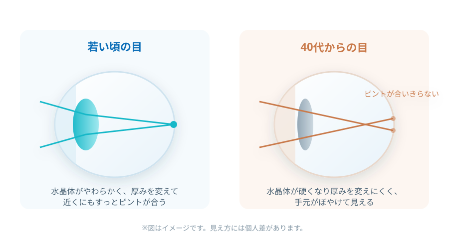
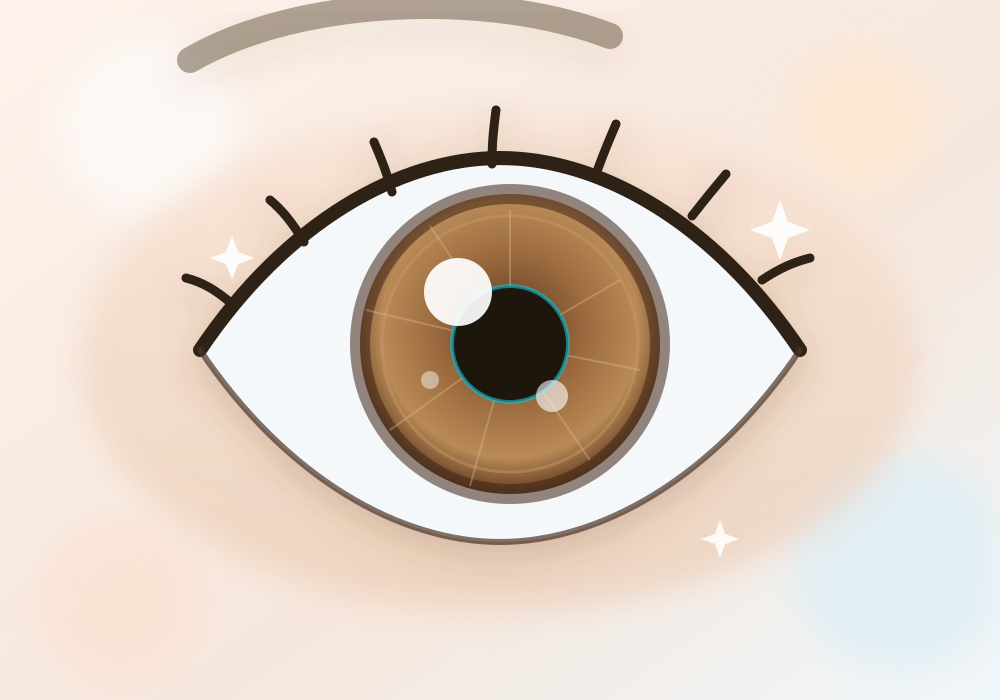
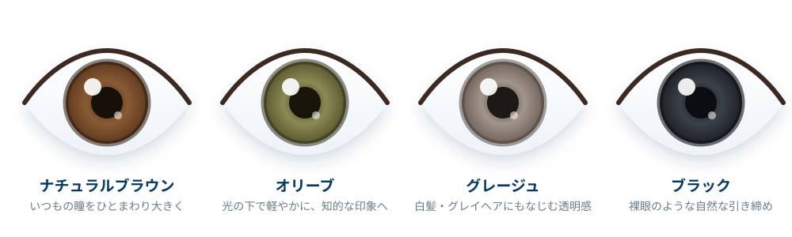

誰にも気づかれずに、
世界が変わる。
スマホの文字も、レストランのメニューも、遠くの人の顔も。
老眼鏡をかけ外しすることなく、1枚のレンズで自然に見える。
それが、遠近両用コンタクトレンズです。
- 老眼鏡いらず
- 見た目が変わらない
- 視界が広い
- マスクでも曇らない

こんな「見えにくい」、
ありませんか？
ひとつでも当てはまったら、遠近両用コンタクトレンズの出番かもしれません。
- ✓スマホの文字を、つい遠ざけて読んでいる
- ✓薄暗いお店でメニューの文字が読みづらい
- ✓コンタクトのままだと手元が見えず、老眼鏡を重ねている
- ✓老眼鏡を出すところを、人に見られたくない
- ✓パソコンと書類を行き来すると目が疲れる
- ✓値札やレシートの小さい数字がぼやける
- ✓夕方になると、目の奥が重く感じる
- ✓メガネのかけ外しが、そろそろ面倒になってきた
その「見えにくい」は、年齢のせいであきらめるものではありません。
レンズを変えるだけで、毎日はもっと軽くなります。
スイッチひとつで、
見え方の違いを体験。
遠くを見るための度数だけのレンズと、遠近両用レンズ。手元の見え方はこれだけ変わります。
近くを見るたび、
目を細めていませんか。
40代を過ぎるころから、目のピント調節力は少しずつ低下します。遠くがよく見えるレンズほど、 手元はぼやけて感じられるもの。だからといって老眼鏡を重ねるのは、見た目にも、手間にも、小さなストレスが積み重なります。
遠近両用コンタクトレンズは、1枚のレンズの中に複数の度数を持たせることで、 視線を動かすだけで遠くも近くも自然に見えるように設計されたレンズです。
見た目は、いつものコンタクトレンズとまったく同じ。
変わるのは、あなたに見えている世界だけ。
「老眼」は、誰にでも訪れる
目のピント調節の変化です。
病気ではありません。カメラのピント合わせが少しゆっくりになる、それだけのことです。

はじまりは40代前半から
自覚しやすいのは40代半ば頃から。「最近スマホを遠ざけて見ている」と感じたら、それが最初のサインです。
早めの対策がラクな理由
見えにくさに慣れる前に始めたほうが、遠近両用レンズの見え方にもスムーズに慣れやすいといわれています。
我慢は目の負担に
見えにくいまま無理を続けると、目の疲れや肩こり・頭痛につながることも。まずは眼科で相談を。
1枚のレンズが、
遠くと近くを同時に届ける。
遠近両用コンタクトレンズは、レンズ内に遠く用・中間用・近く用の度数を配置。脳が必要な像を選び取ることで、視線の移動だけで自然にピントが切り替わります（同時視デザイン）。

選ばれている、6つの理由。
誰にも気づかれない
レンズは瞳の中。老眼鏡を取り出す仕草も、かけ替えるひと手間もありません。周りに気づかれることなく、見え方だけが変わります。
見た目の印象が変わらない
「老眼鏡をかけた自分」を見られたくない方にも。メイクや服装の雰囲気を崩さず、いつもの自分のままでいられます。
視界が広く、ゆがみが少ない
レンズが瞳と一緒に動くため、視線を向けた先がそのまま見える自然な視界。メガネのようなフレームの枠もありません。
マスクでも曇らない
寒い日の屋内、マスク着用時、湯気の立つキッチン。メガネが曇るあの瞬間のストレスから解放されます。
スポーツ・アウトドアでも快適
ゴルフのスコアカードもボールの行方も。ずれ落ちや破損の心配が少なく、体を動かす時間を思いきり楽しめます。
今のコンタクトから乗り換えるだけ
すでにコンタクトをお使いの方なら、レンズを替えるだけ。1DAY・2WEEK・ハードなど、慣れたタイプのまま選べます。
老眼鏡・遠近両用メガネと、
何が違うの？
それぞれに良さがあります。ライフスタイルに合わせて選ぶことが大切です。
← 横にスクロールしてご覧いただけます →
| 遠近両用 コンタクトレンズ |
老眼鏡 | 遠近両用メガネ | |
|---|---|---|---|
| 見た目の印象 | ◎ 変わらない |
△ かけ外しが目立つ |
○ フレーム次第 |
| かけ外しの手間 | ◎ 不要 |
△ その都度必要 |
◎ 不要 |
| 視界の広さ | ◎ 広い |
○ 手元中心 |
○ 周辺にゆがみも |
| マスク・湯気での曇り | ◎ 曇らない |
△ 曇る |
△ 曇る |
| スポーツ時 | ◎ ずれにくい |
△ 不向き |
△ ずれやすい |
| おしゃれの幅 | ◎ カラコンも選べる |
○ フレームで |
○ フレームで |
| お手入れ | ○ 1DAYならお手入れ不要 |
◎ 拭くだけ |
◎ 拭くだけ |
※ 一般的な傾向をまとめたものです。見え方・使い心地には個人差があります。併用いただくのもおすすめです。
見えるだけじゃ、もったいない。
近くも遠くも見えて、瞳の印象までひとつ明るく。いま人気の「遠近両用カラコン」。

「若く見えるね」の理由は、
言わないでおく。
年齢を重ねると、瞳の輪郭はやわらぎ、白目の透明感も少しずつ変化します。 遠近両用カラコンは、ごく自然な着色で瞳の輪郭を整え、 顔全体の印象をやさしく引き上げてくれます。
- 手元も遠くも見えて、瞳の印象までワンランクアップ
- 「盛る」より「ととのえる」。大人のためのナチュラル発色
- グレイヘアや落ち着いたメイクにもなじむ色設計
- 1DAYタイプならお手入れ不要。お出かけの日だけの使い分けも
大人の瞳になじむ、4つの色。

※ カラーバリエーションはイメージです。お取り扱い製品・色は店舗により異なります。
気づかれるのは「印象」だけ
カラコンだと気づかれにくい自然な着色径・フチ設計。変わったのは瞳の色ではなく、あなたの表情。
見え方はしっかり遠近両用
おしゃれのためだけのレンズではありません。手元の文字も、遠くの表示も、きちんと見えることが前提です。
はじめてでも安心の店頭選び
色の見え方は、瞳の色や光の当たり方で変わります。シティコンタクトなら、実際に試しながらお選びいただけます。
暮らし方に合わせて選べる、
遠近両用のラインナップ。
使い捨てタイプからハードレンズ、カラータイプまで。専門スタッフがあなたの見え方に合う1枚をご提案します。
EVERYDAY
毎日を、いちばん手軽に
朝つけて、夜そのまま捨てるだけ。洗浄・保存の手間がなく、いつでも新しいレンズで快適に過ごせます。目のトラブルが気になる方にも。
SOMETIMES
お出かけの日だけ使いたい方に
普段はメガネ、旅行やゴルフ、会食の日だけコンタクト。必要な日だけ使えるのが1DAYの魅力です。
FIRST STEP
はじめての遠近両用に
遠近両用は「慣れ」も大切。まずは1DAYで試し、見え方を確かめてから本格的に切り替える方が多くいらっしゃいます。
COST
毎日使うなら経済的
ほぼ毎日コンタクトを使う方には、2週間・1ヶ月交換タイプがおすすめ。1日あたりのコストを抑えられます。
CARE
お手入れもサポート
ケア用品の選び方から正しい洗浄方法まで、店頭でていねいにご説明します。ケア用品もあわせてお取り扱い。
ECO
ごみを減らしたい方にも
毎日の使い捨てに比べ、パッケージのごみが少ないのも特長。長くお使いいただくほど差が出ます。
CLEAR VIEW
くっきりした見え方を求める方へ
乱視のある方や、シャープな見え方を重視する方に。長年ハードをお使いの方も、遠近両用タイプへ切り替えられます。
LONG LIFE
きちんと使えば長く使える
正しいお手入れで長期間ご使用いただけます。定期的な検査とあわせて、安心してお使いいただけるようサポートします。
SUPPORT
紛失・破損もご相談ください
定額制プランなら、破損や紛失時の保証も。万一のときもお気軽に最寄りの店舗へご相談ください。
NATURAL
気づかれないナチュラル発色
瞳の輪郭をそっと整える、控えめな着色デザイン。オフィスでも浮かない自然さが大人に選ばれています。
1DAY COLOR
お出かけの日だけの特別
同窓会、記念日、写真を撮る日に。1DAYタイプなら気軽に取り入れられます。
TRY
店頭で色をお試しいただけます
色の印象は瞳の色や照明で変わります。ぜひ店頭で、実際の見え方をお確かめください。
お取り扱いメーカー（一部）
- メニコン
- シード
- ボシュロム
- 日本アルコン
- クーパービジョン
- ジョンソン・エンド・ジョンソン
- エイコー
- ロート製薬
- オフテクス
※ お取り扱い商品は店舗により異なります。詳しくは商品一覧または最寄りの店舗へお問い合わせください。
切り替えた方から、
届いている声。
会議中に老眼鏡を出さなくてよくなった
資料とスクリーンを何度も見比べる仕事なので、かけ外しが本当にストレスでした。今はそのまま視線を動かすだけ。まわりには何も言っていません。
ゴルフのスコアカードが読める
ボールの行方も手元の数字も見えるので、プレー中に眼鏡を探さなくてよくなりました。曇らないのも助かります。マスクの季節も快適です。
カラータイプにしたら褒められました
見えるようになったことより先に「なんだか明るくなったね」と言われて驚きました。理由は、内緒にしています。
※ 掲載内容は個人の感想です。見え方・使い心地には個人差があります。
はじめやすい、定額制プラン。
遠近両用レンズは「試して、合わせていく」ことが大切。だからこそ、続けやすい仕組みをご用意しています。
メルスプラン
メニコンの定額制プラン。月々のお支払いで、レンズを安心してお使いいただけます。
- 破損・不具合時の交換保証
- 他のレンズへの変更も相談可能
- 定期検査で目の健康をサポート
Miru 3Cプラン
使い方に合わせて選べる定額制プラン。はじめての方にもわかりやすい料金設計です。
- 月々定額で計画が立てやすい
- アフターサポートが充実
- 遠近両用レンズへの切り替えもご相談ください
※ プランの詳細・料金は定額制プランよくあるご質問をご覧ください。内容は変更となる場合があります。
はじめての方も、
5ステップで安心。
-
STEP1
ご来店・ご相談
ご予約なしでもOK。「手元が見えにくくて」の一言からで大丈夫です。今お使いのレンズやメガネがあればお持ちください。
-
STEP2
眼科での検査・処方
コンタクトレンズは高度管理医療機器です。目の状態を確認し、医師の処方（指示）を受けていただきます。
-
STEP3
レンズ選び・試着
実際にレンズを装用し、遠くと近くの見え方を確認。遠近両用は度数の組み合わせが大切なので、じっくり合わせます。
-
STEP4
つけ外しの練習・ご購入
はじめての方には、つけ外しの練習も。多くの方が30分〜1時間ほどでできるようになります。
-
STEP5
使い始めてからのフォロー
「もう少し手元が見たい」などの調整もお任せください。定期検査とあわせて、長く快適にお使いいただけるようサポートします。
よくあるご質問
多くの方は数日〜数週間で慣れていかれます。脳が「必要な像を選ぶ」ことに慣れる期間が必要なため、最初は少しぼやけて感じることもあります。見え方に違和感が続く場合は度数の調整で改善することも多いので、遠慮なくご相談ください。
はい、多くの場合そのまま遠近両用タイプへ切り替えられます。1DAY・2WEEK・ハードなど、今お使いのタイプに近い製品からお試しいただくのがおすすめです。まずは眼科で検査を受けていただきます。
乱視の程度によって選択肢が変わります。乱視用と遠近両用を兼ね備えた製品や、ハードレンズという選択肢もあります。目の状態を確認したうえで、最適な組み合わせをご提案します。
もちろん可能です。細かい作業や長時間の読書のときだけ、遠近両用コンタクトの上から軽い老眼鏡を使う方もいらっしゃいます。無理なく見えることがいちばん大切です。
大人の方向けの製品は、着色の直径や色味が控えめに設計されており、自然な印象に仕上がるものが中心です。ただし色の見え方は瞳の色や照明で変わります。ぜひ店頭でお確かめください。
40代半ばから50代の方が中心ですが、「手元が見えにくい」と感じたときが始めどきです。見えにくさに慣れてしまう前のほうが、遠近両用の見え方にもスムーズに慣れやすいといわれています。
ご予約なしでもご来店いただけます。ご相談・見え方の確認は無料です。レンズの価格は種類やプランによって異なりますので、お気軽に店頭またはお電話（0120-103-664）でおたずねください。
その他のご質問はよくあるご質問もご覧ください。
その見えにくさ、
今日から変えられます。
遠近両用レンズは、一人ひとりの目に合わせて選ぶもの。
シティコンタクトの専門スタッフが、あなたの「見たい距離」からご提案します。
ご相談・見え方の確認は無料です。
九州・中国地方に展開／福岡・佐賀・長崎・大分・熊本・鹿児島・山口・鳥取
はじめての方はご利用の流れもご覧ください
コンタクトレンズは高度管理医療機器です。必ず眼科医の検査・処方を受けてお求めください。
使用前に添付文書をよく読み、正しくお使いください。定期検査は必ずお受けください。